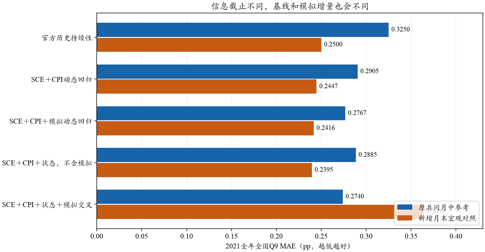
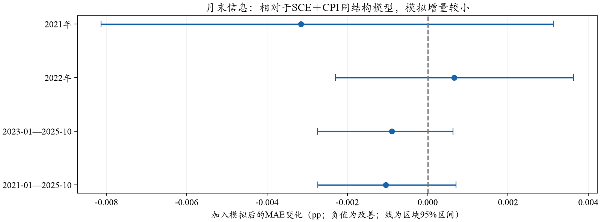

SCE · 主指标／辅助指标／公平对照 · 离线补充 · 0 API
当前是扩展窗口回归，具有ARX形式；没有估计ARIMA误差过程
简单加权作为主衍生指标，动态回归作为辅助分析。0.1465pp是原截止口径下2021年下半年的MAE，全年为0.2740pp。加入更充分的月末宏观对照后，无交叉项联合模型2021全年0.2416pp，对应SCE＋CPI控制0.2447pp；增量小，不能沿用原基线强度宣称大幅提高异常预测能力。
1．究竟是什么模型，有没有差分？
代码用岭回归估计“当月SCE相对最新公开SCE的修正”。系数每月按已公开标签扩大训练窗口后重估。由于使用历史SCE与外生CPI、模拟信号，可理解为ARX式条件均值回归；最新公开SCE有时滞后两个月，因此不严格标成固定一阶AR(1)。
yₜ − Aₜ ＝ cₜ ＋ b₁,ₜ Aₜ ＋ b₂,ₜ(πₜ−Aₜ) ＋ b₃,ₜ Δπₜ ＋ b₄,ₜ(Sₜ−Aₜ) ＋ b₅,ₜ Dₜ ＋ b₆,ₜ Dₜ(Sₜ−Aₜ) ＋ εₜ
A为最后公开官方SCE，π为最新已发布CPI同比，S为模拟全国值，D表示CPI同比≥4%。无状态组删去最后两项；不含模拟对照删去模拟差与其交叉项。
没有加入滞后预测误差，故没有MA误差项；也没有估计ARIMA(p,d,q)或季节差分。y−A是相对公开锚的变化，A不一定等于相邻月份y，因此不能据此称ARIMA的d=1。Δπ是连续两次已公布CPI同比的差，不是CPI价格指数差分。宏观简单加权也不是时序术语里的MA模型。
“动态”指逐月更新系数，不是已实现卡尔曼滤波、马尔可夫状态切换，或个人信念递推。未来若加入ARIMA残差，需要另行验证阶数、平稳性和残差结构；当前没有这些实现。术语参见Hyndman与Athanasopoulos：动态回归。
2．报告采用主、辅助两层，但保留原始模拟
主衍生指标：历史官方SCE与模拟SCE的凸组合，明确训练与评价月份。原共同参考口径下，早48月MSE拟模拟权重约13.5%，后34月MAE约0.1850pp，对照0.1941pp；MAE拟权为0也披露。原始模拟MAE与微观指标仍单独展示，不能用后处理掩盖个体分布缺口。
辅助指标：按同一可得信息、同一训练/更新规则比较动态SCE＋CPI与加入模拟的模型。辅助指标解释模拟信号有无增量，不自动取代主指标，也不能把复杂统计模型的全部收益算成LLM贡献。
3．为什么还要补月末宏观对照？
原动态模型及宏观对照都按原CPI首发日的共同月中截止构造宏观锚；A模拟则按每个人作答日前一天，最晚覆盖月底。这不是完全相同的信息范围。现在仅新增月末宏观对照，保留原结果：例如2021-06，6/10只知道4月SCE3.4%，但月底已知道6/14公布的5月SCE4.0%；12月也有同类情况。
月末对照在纽约时间月末结束前选择最后已公开的历史SCE，CPI仍是已发布的首发，不读尚未公开的目标月SCE或目标月实际CPI。拟合家族与2019—2020的18/6选参规则不变；参数每月只使用当时已公开标签。先验时点、真实当期人口和模型知识等A线边界仍在，月末敏感性不等于认证严格B预测。

单位pp；蓝色原共同月中、橙色新增月末。改变截止同时改变可得锚和训练标签，不能把跨口径差值全部归给模拟机制。
| 方法 | 原口径2021全年 | 月末2021全年 | 月末2021下半年 | 月末2022全年 | 月末后34月 |
|---|
| 官方历史持续性 | 0.3250 | 0.2500 | 0.2000 | 0.3833 | 0.1765 |
|---|
| SCE＋CPI动态回归 | 0.2905 | 0.2447 | 0.1869 | 0.3901 | 0.1741 |
|---|
| SCE＋CPI＋模拟动态回归 | 0.2767 | 0.2416 | 0.1852 | 0.3907 | 0.1732 |
|---|
| SCE＋CPI＋状态，不含模拟 | 0.2885 | 0.2395 | 0.1928 | 0.3925 | 0.1748 |
|---|
| SCE＋CPI＋状态＋模拟交叉 | 0.2740 | 0.3639 | 0.2334 | 0.3969 | 0.1742 |
|---|
4．这会如何改变贡献的表述？
原口径同结构状态控制0.2885→加入模拟0.2740pp，增量0.0144pp；下半年0.1593→0.1465pp。新增月末、无状态交叉项结构则为0.2447→0.2416pp，增量约0.0032pp；持续性已为0.2500pp。状态交叉项组在新口径下恶化到0.3639pp，说明稀疏高状态下的交叉项并不稳健，不能仅凭原来最小分数选它。

只展示事先列出的无状态交叉项家族。加入模拟的净MAE改善：2021约0.0032、2022为恶化约0.0007、后34月改善约0.0009pp；区间均跨零。含交叉项的不稳定结果完整保留在上表和数据中。
应表述为“在预设的回顾性动态校准中，模拟信号在部分异常阶段提供有限增量；增量对截止口径与模型形式敏感”。目前不表述为“已经证明大幅提高异常通胀初期预测能力”。不能把0.1465称全年值，或与另一时间窗口的0.1850直接比较。
5．简单组合也要接受相同的更强基线
仅为时点敏感性，把月末锚也代入原早48/后34组合规则：MAE与MSE拟模拟权重均为0.000，后34月为0.176471pp，即月末持续性。原口径13.5%权重与0.1850pp成绩没有被改写，但不能拿它与月末基线交叉比较后宣称增量。
用户确定的主、辅助呈现层级可以保留；最终研究结论必须同时展示公平宏观对照与时点敏感性。当前不再依据这些后期成绩挑参数，也不自动把任一新方案升级到路线B。只有82个宏观月，2021仅12个月；各年份已经查看，不称新的盲测。
原计分与2021专项 · 原主组合与宏观校准
来源：outputs/sce_dynamic_fair_benchmark_20261026_v1；原始A/B、近似评分、Core＋Normal、原报告和研究包均保留。新增API、密度拟合均为0。